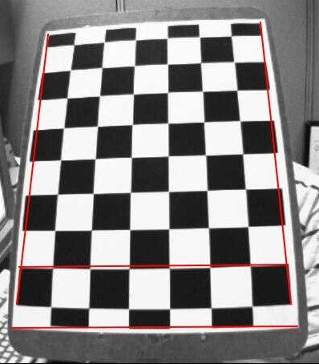

Что такое калибровка изображений?
Калибровка изображений — это процесс преобразования и корректировки данных изображения таким образом, чтобы оно соответствовало реальному объекту, который было снято. В контексте компьютерного зрения калибровка изображений часто используется для устранения искажений, вызванных объективом камеры, или для преобразования изображений из одной системы координат в другую.
Зачем нужна калибровка изображений?
Калибровка необходима для исправления различных искажений, таких как:
- Дисторсия объектива: камеры могут вводить радиальные и тангенциальные искажения, которые искажают изображение.
- Параллельность и перспективы: Калибровка помогает компенсировать ошибки, возникающие из-за углов установки камеры относительно объекта.
- Приведение изображений в одну систему координат: Для анализа и обработки изображений важно, чтобы все изображения были приведены в единую систему координат, особенно при работе с несколькими камерами.
Методы калибровки
Существует несколько методов калибровки изображений, наиболее популярные из которых:
- Калибровка с использованием шахматных досок: Этот метод основан на использовании шахматной доски с известными размерами для вычисления параметров камеры.
- Использование различных геометрических объектов: Применяются объекты с известными геометрическими характеристиками (например, круги или квадраты), чтобы откалибровать камеру.
- Гомографическое преобразование: Используется для преобразования изображений с одного вида проекции в другой.
Калибровка камеры с использованием OpenCV
В OpenCV калибровка изображения или камеры обычно выполняется с использованием функции cv2.calibrateCamera(), которая помогает вычислить параметры камеры, такие как фокусное расстояние, центр изображения и коэффициенты искажения.
Пример кода для калибровки камеры с использованием шахматной доски: 
import numpy as np
import cv2 as cv
import glob
criteria = (cv.TERM_CRITERIA_EPS + cv.TERM_CRITERIA_MAX_ITER, 30, 0.001)
objp = np.zeros((6*7, 3), np.float32)
objp[:, :2] = np.mgrid[0:7, 0:6].T.reshape(-1, 2)
objpoints = []
imgpoints = []
images = glob.glob('doska.jpg')
for fname in images:
img = cv.imread(fname)
gray = cv.cvtColor(img, cv.COLOR_BGR2GRAY)
ret, corners = cv.findChessboardCorners(gray, (7, 6), None)
if ret:
objpoints.append(objp)
corners2 = cv.cornerSubPix(gray, corners, (11, 11), (-1, -1), criteria)
imgpoints.append(corners2)
cv.drawChessboardCorners(img, (7, 6), corners2, ret)
cv.imshow('Corners', img)
cv.waitKey(500)
cv.destroyAllWindows()
В этом примере мы используем изображения с шахматной доской для калибровки камеры. Функция cv2.calibrateCamera() возвращает параметры камеры, которые можно использовать для устранения искажений на изображениях.
Использование полученных данных
После выполнения калибровки камеры можно использовать полученные параметры для коррекции искажений на изображениях. Например, можно применить функцию cv2.undistort() для исправления искажений на изображении.
# Загрузка искажающего изображения
img = cv2.imread('distorted_image.jpg')
# Применение коррекции искажения
undistorted_img = cv2.undistort(img, mtx, dist)
# Отображение изображения до и после коррекции
cv2.imshow('Исходное изображение', img)
cv2.imshow('После коррекции', undistorted_img)
cv2.waitKey(0)
cv2.destroyAllWindows()
Этот код позволяет исправить искажения изображения, используя параметры камеры, полученные в процессе калибровки. После этого изображение будет корректно отображать объекты, без деформаций, вызванных объективом.
Применение калибровки в реальных задачах
Калибровка изображений является важным шагом в таких областях, как:
- Робототехника: Использование калиброванных камер для точного ориентирования роботов в реальном мире.
- Моделирование 3D объектов: Калибровка используется для точного воссоздания 3D моделей объектов на основе изображений.
- Автономные автомобили: Камеры в автономных транспортных средствах нуждаются в калибровке для правильной интерпретации окружающей среды.